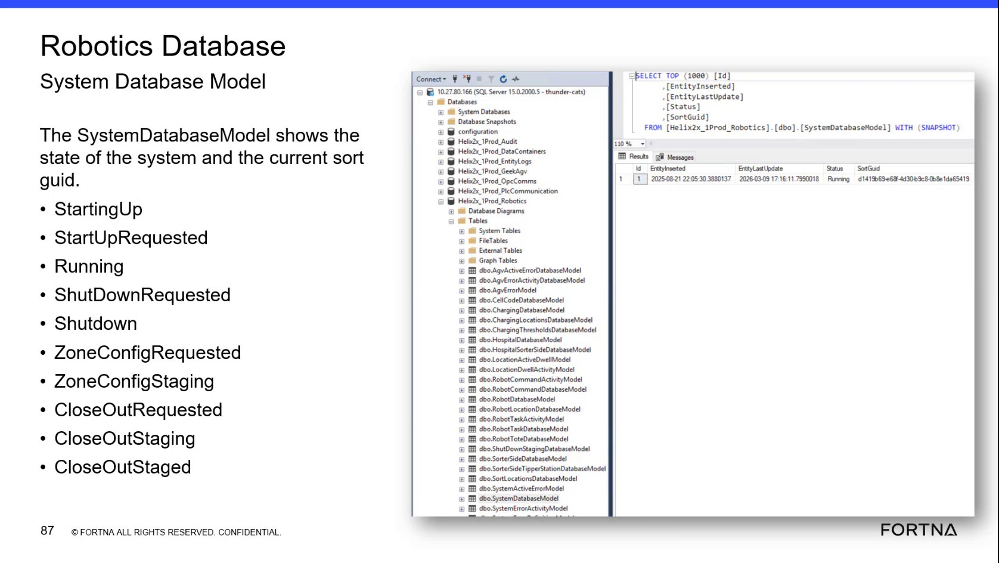

| Procedure ID | proc_check_optisweep_system_state_and_sort_guid_in_ssms_v1 |
|---|---|
| Title | Check OptiSweep System State and Sort GUID in SSMS |
| Procedure Type | diagnostic |
| Primary Role | L2_support |
| Support Safe | Yes |
| Capability Tags | fleet_system_status |
| Access Surface | wcs_sql |
| Audience Roles | L2_support, L3_support |
| Failure Pattern Tags | None |
| Validation Status | needs_sme_review |
| Merge Status | source_finalized |
Use the WCS / Helix DB (SSMS) to perform a read-only check of the Helix2x_1Prod_Robotics dbo.SystemDatabaseModel record. Verify the current system lifecycle Status, SortGuid, EntityInserted, and EntityLastUpdate values.
Use the WCS / Helix DB (SSMS) when troubleshooting or validating the current OptiSweep system lifecycle state and associated sort identifier. This diagnostic verifies the live SystemDatabaseModel record without changing system state.

Responsible role: L2_support
Instruction:
In WCS / Helix DB (SSMS), select the Helix2x_1Prod_Robotics database.
Expected result:
Helix2x_1Prod_Robotics is selected and its database objects are visible in SSMS.
Stop or Escalate If:
Responsible role: L2_support
Instruction:
In WCS / Helix DB (SSMS), open dbo.SystemDatabaseModel under Helix2x_1Prod_Robotics, or use the displayed read-only SystemDatabaseModel query.
Expected result:
SSMS displays a SystemDatabaseModel results grid containing the system-state record.
Stop or Escalate If:
Responsible role: L2_support
Instruction:
In the WCS / Helix DB (SSMS) results grid, inspect the EntityInserted, EntityLastUpdate, Status, and SortGuid columns.
Expected result:
The returned row shows values for EntityInserted, EntityLastUpdate, Status, and SortGuid.
Stop or Escalate If:
Responsible role: L2_support
Instruction:
Compare the Status value in the WCS / Helix DB (SSMS) results grid with StartingUp, StartUpRequested, Running, ShutDownRequested, Shutdown, ZoneConfigRequested, ZoneConfigStaging, CloseOutRequested, CloseOutStaging, and CloseOutStaged.
Expected result:
The current Status matches one of the documented SystemDatabaseModel lifecycle values.
Stop or Escalate If:
Responsible role: L2_support
Instruction:
Record the displayed Status, SortGuid, EntityInserted, and EntityLastUpdate values from the WCS / Helix DB (SSMS) SystemDatabaseModel row.
Expected result:
A recognized Status, populated SortGuid, and the displayed timestamp values are available as the diagnostic result.
Stop or Escalate If: